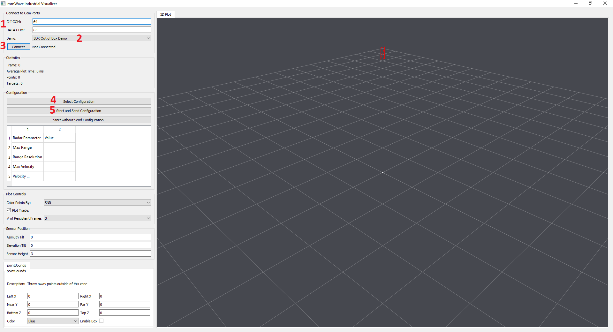
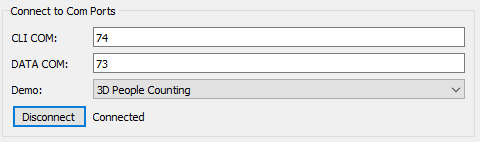
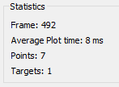
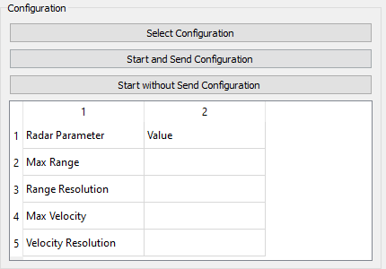
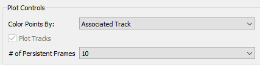
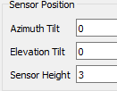
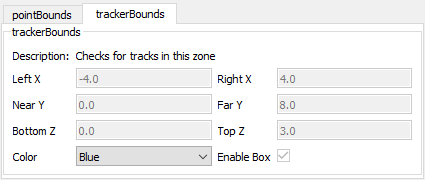
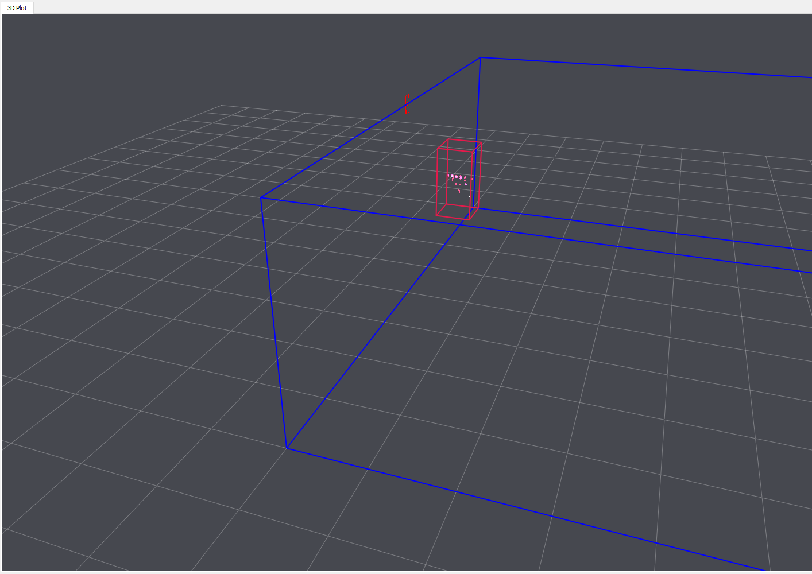
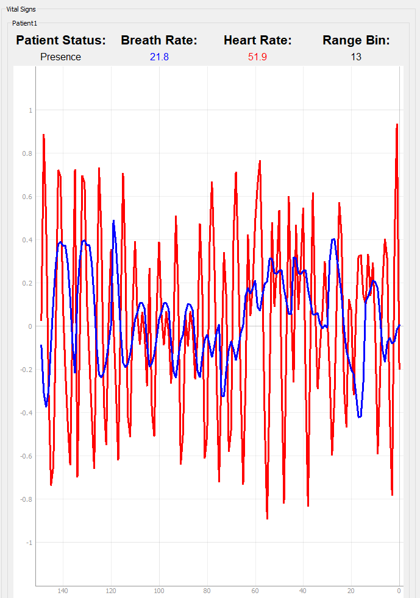

# Overview
This tool parses and visualizes data sent from TI mmWave Radar devices. It is
designed to help expedite evaluation and to make it easier to investigate TI
radar demos.
# Supported Demos
The follow TI demos are supported in this visualizer:
* Out of Box Demo
* 3D People Counting
* Overhead 3D People Counting
* Long Range People Detection
* Vital Signs with People Tracking
* Mobile Tracker
* Small Obstacle Detection
------
# Quickstart
This section will give a brief rundown of how to get started using the mmWave
Industrial Visualizer.
<p></p>
## 0. Launch the visualizer:
* Navigate to `<mmwave_industrial_toolbox_install_dir>\tools\Visualizer\`
* Run `mmWave_Industrial_Visualize.exe`
* It should take 5 - 10 seconds to startup.
On the left side of the visualizer setup window are options and parameters
for running the demo. On the right side is a 3D graph which will display
the relevant demo output.
## 1. Set COM Ports
At the top left of the GUI should be two text fields for the COM Ports.
These will attempt to autodetect your TI mmWave Device and autofill the correct
COM ports.
If this does not auto-populate, find them by going to your Device
Manager (or equivalent menu for your OS) and looking for the serial ports.
Typically, the CLI COM Port will be name either
* `Silicon Labs Dual CP2105 USB to UART Bridge: Enhanced COM Port`
* `XDS110 Class **Application/User UART**`
Typically, the Data COM Port will be name either
* `Silicon Labs Dual CP2105 USB to UART Bridge: Standard COM Port`
* `XDS110 Class Auxiliary Data Port`
When entering the COM Port, please be sure to put only the COM Port number.
## 2. Select Demo
Now that the COM Ports are selected, using the dropdown menu in the top left
to select the demo that you'd like to run. Be sure that the corresponding
binary is flashed onto your device.
## 3. Connect to Device
Now click the connect button in the top left. If the status does not change
to *Connected*, please return to step 1 and revalidate the COM port selections
## 4. Select Configuration
Next, click the *Select Configuration* button, and navigate using your file
explorer to the correct cfg file for your application. Typically, these
can be found at `<mmWave_Industrial_Toolbox_location>/labs/<LabName>/chirp_configs`
## 5. Send Configuration and Start the Demo
Finally, click the *Start and Send Configuration* button, which will transmit
your config file to the device. Please note that this may take ~10 seconds.
Once this is complete, data should begin to be displayed in the GUI.
---------
# Getting Familiar with Different Parts of the Visualizer
## Setup Pane
This area is where you will start when using the visualizer. You can configure
COM Ports (if they were not detected automatically), select the demo type,
and connect to the device.
<p></p>
## Statistics Pane
This area will show some of the high level information for the data that
is being shown, such as the frame number, number of points, and the number
of targets/tracks (when applicable).
<p></p>
## Configuration Pane
This area is focussed on your radar chirp configuration. You can use it
to select your config file, send it to the device, or to just enable the visualizer
if a Hard Coded Configuration is being used.
<p></p>
## Plot Controls Pane
This area allows you to customize the display of information on the plot.
Use it to hide targets/tracks (for demos which generate them), determine
how you would like points to be colored, and how many frames worth of data
to display concurrently.
<p></p>
## Sensor Position Pane
This area allows you to input the sensor position, to ensure that the visualization
matches your environment as closely as possible. The various tilt angles
are measured in degrees, while sensor height is measured in meters.
<p></p>
## Boundary Boxes Pane
This area is used to generate and build geometry into the visualization
which can impact what is seen. By default, a pointBounds box will be used,
which will remove any points outside of the designated region. Additional
types of boxes may be added for specific labs and configurations, such as boundary
boxes for tracks or occupancy zones.
<p></p>
## 3D Plot
This area is the main plot for the visualizer. It shows the relevant
information which is transmitted from the device in realtime, and can be
used to better understand the data being output.
<p></p>
## Components Unique to Specific Demos
Some demos may add components to the visualizer to better enable the
visualization for that specific demo. Below, you can see some of the unique
options which are available.
### Vital Signs Pane
This area is unique to the **Vital Signs with People Tracking** demo,
and shows crucial vital signs of detected people via the measurements
done in this demo.
<p></p>
---------
# Working with Visualizer Source Code
In order to ensure that the visualizer can be modified to suit any special
use case, the source code for the visualizer is included.
## Requirements
Below is a table which includes the required software. Most of these are
python modules which can be installed with **pip**. You can use the script
setupEnvironment.bat to install all of these using pip.
Software | Version | How to get
--------------------|-------------------|------------
Python 3 | 3.6 or later | [Python 3.6 64Bit Download](https://www.python.org/ftp/python/3.6.0/python-3.6.0-amd64.exe)
pyqt5 | 5.15.4 | ``pip install pyqt5==5.15.4``
pyopengl | 3.1.5 | ``pip install pyopengl==3.1.5``
numpy | 1.19.4 | ``pip install numpy==1.19.4``
pyserial | 3.5 | ``pip install pyserial==3.5``
pyqtgraph | 0.11.0 | ``pip install pyqtgraph==0.11.0``
## Running the Visualizer From Source
Once all the requisite software is installed, the GUI can be started by
running the command ``python gui_main.py`` in the terminal
## Understanding the Visualizer Source Code
Below is a brief rundown of the various source files included in this
visualizer and what their purpose is.
* **gui_main.py** the main program which controls placement of all items in the GUI and schedules UART read and graphing tasks.
* **gui_parser.py** defines an object used for parsing the UART stream. If you want to parse the UART data, you can use this file to do so.
* **gui_threads.py** defines the different threads that are run by the demo. These threads handle updating the plot and calling the UART parser.
* **graphUtilities.py** contains functions used to draw objects.
* **gui_common.py** aggregates several variables and configurables which are used across several files.
* **parseFrame.py** is responsible for parsing the frame format of incoming data.
* **parseTLVs.py** is responsible for parsing all TLV's which are defined in the demos.
# Need More Help?
* Find answers to common questions on [mmWave E2E FAQ](https://e2e.ti.com/support/sensor/mmwave_sensors/w/wiki)
* Search for your issue or post a new question on the [mmWave E2E forum](https://e2e.ti.com/support/sensor/mmwave_sensors/f/1023)